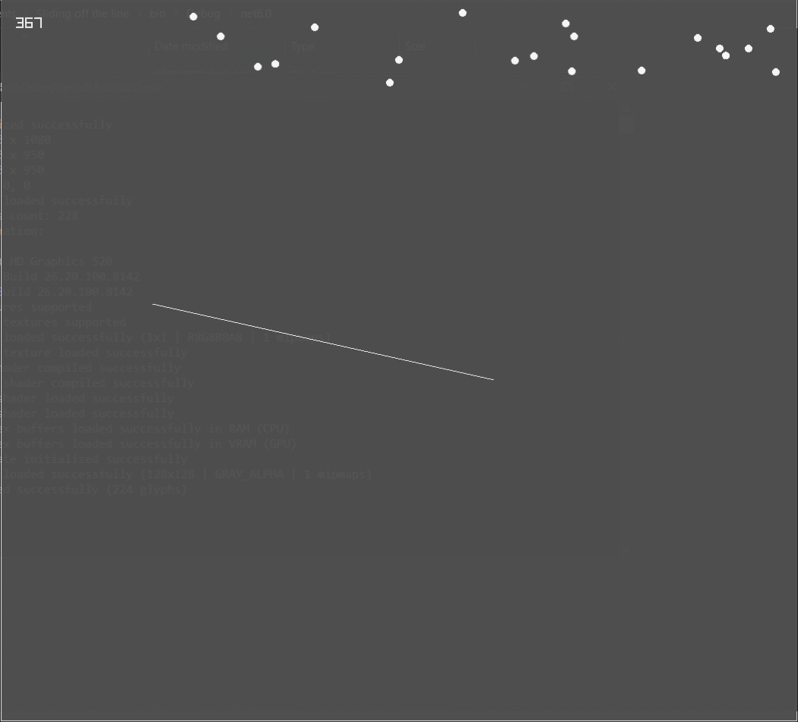

Developing your own physics engine can be seriously hard, as it involves a lot of calculations and vectors usage, and obviously some physics formulas too. Still I decided to give it a try because I wanted to do some experiments on my programming skills and thought it could be something great for physics too.
How and Why I Started?
Although it is currently written in C#, it's initial development took place even before I wrote my first “Hello World” C# program. I worked on it when I only knew Python and C++, so that I decided to work on it with C++. It initially was inspired by Gonkee's Soft Body Simulation Video, but with an obvious simple change, I was going to start with Circles instead of having Mass Points initially and then changing them to circle.
I decided to use Raylib, for rendering and occasionally for inputs for debugging purposes. As it was the only library I was having experience with and had made a couple of game with it, it felt much more advanced in the sense of a graphics library.
The first time I was working on it, it wasn't uploaded to Github, so I made different folder for different levels of complexity I was having, first folder having a project with circles interacting with each other properly, and second folder having two circles being connected through a spring. Which turned out to be a failure, the circles seemed to be colliding and interacting with each other pretty well but the spring was exerting force on the circles it was connected to. I tried a lot overcome this failure and make it work properly, but I didn't worked out. Which mentally forced me to stop working on this project, and that is what I did.
After Timespan of 5 Months
After around 5 months, when I was having few repositories on my Github Profile and I want to work on something interesting and expand my Github Profile too, and suddenly a thought sparkled in my head which lead me to that old physics simulation code. I made a new repository with the name of Radius2D, it was named after this because it's main object or polygon that was used in the physics world was a circle, and a circle have a unique property named of course radius, and as was and is limited to 2d canvas so I added named it Radius2D, I first uploaded the files instead of pushing a commit, because the initial files were in C++, and I wanted to change that to C#. Reason for switching to C# was because I was having better Object Oriented Programming approach in C# and having more sophisticated vector calculations.
Wrote some C# files to make the same thing in different language, most of the mathematical formulas were copied from the C++ files and modified for C# and after few trail and error, it got working exactly the same and I just realized it is not working fine. I looked at the built of the old C++ version and realized it was too cranky to be on Github.
I was sure the problem was hidden somewhere in the collision response as I was drawing circles in different color when they are colliding with each other. This cranky result pushed me to try different way of handling collision response. And they were also not showing any significantly better result.
Getting Over The Cranky Results
After doing research on collision response I couldn't find any useful material except for Wikipedia Page and a Youtube Playlist having all the explanation and coding in JavaScript.
After going through all the videos of the playlist and reading the Wikipedia I realized a mistake. The mistake was in my each attempt I was either trying the penetration resolution approach or the elasticity resolution approach or some other approaches using force vector. Turns out it it needs to have both penetration and elasticity resolution approach at the same time.
Solution to the Crankiness
Penetration resolution is when we push both circles apart by using their position vector. Whereas on the other hand Elasticity resolution is when push the circles apart using the velocity vectors of them. Combination of both these approaches result in a much better result.
// Calculating Penetration
Vector2 distance = circ1.pos - circ2.pos;
float length = (float) Math.Sqrt(distance.X * distance.X + distance.Y * distance.Y);
Vector2 normal = distance / length;
float depth = (circ1.radius + circ2.radius) - length;
Vector2 pentrateResolve = normal * depth / (circ1.mass + circ2.mass);
// Resolving Penetration
circ1.pos += pentrateResolve * circ1.mass;
circ2.pos -= pentrateResolve * circ2.mass;
// Calculating Elasticity Resolution
Vector2 distance = circ1.pos - circ2.pos;
float length = (float) Math.Sqrt(distance.X * distance.X + distance.Y * distance.Y);
Vector2 normal = distance / length;
float productOfElasticity = circ1.elasticity * circ2.elasticity;
float ratioOfMass = circ1.mass / circ2.mass;
Vector2 relativeVelocity = circ1.vel - circ2.vel;
float seperatingVelocity = Vector2.Dot(normal, relativeVelocity);
float newSeperatingVelocity = seperatingVelocity * -1 * productOfElasticity;
float seperatingVelocityDifference = newSeperatingVelocity - seperatingVelocity;
float impulse = seperatingVelocityDifference / (circ1.inverseMass + circ2.inverseMass);
Vector2 impulseVector = impulse * normal;
// Resolving Elasticity
circ1.vel += impulseVector * circ1.inverseMass * deltaTime * 60;
circ2.vel -= impulseVector * circ2.inverseMass * deltaTime * 60;
Adding Line Segments to the World
After that I thought using static polygons could be difficult as shown in Gonkee's Video, as they were composed of line segments I thought to use them here and design my own physics world using those line segments. But calculating if the circle collides with the line or not was hard, but I came through this explanation that if we can find the Area of a Triangle using it's three points (Both ends of the line and center of the circle), that could be used to find the Triangle's height (or the least distance between the circle and the line). So that height could be compared to the circle's radius to know if it's overlapping with it or not?
// Find the Area of A Triangle
private float TriangleArea(Vector2 a, Vector2 b, Vector2 c)
{
Vector2 AB = new Vector2(b.X - a.X, b.Y - a.Y);
Vector2 AC = new Vector2(c.X - a.X, c.Y - a.Y);
float crossProduct = AB.X * AC.Y - AB.Y * AC.X;
if (crossProduct >= 0)
{
return crossProduct / 2;
}else
{
return crossProduct * -1 / 2;
};
}
Even with Line Segments the same approach of collision response was used, penetration resolution and elasticity resolution. This works completely fine but the problem occurs when the ball slides of the Line Segment, technically it never slides of the Line, even when it should.
To solve this problem I calculated four vectors, two of which are unit vectors of the line segment heading in opposite direction, whereas the other two vectors are pointing from two sides of line segment to center of circle. This is much better explained by Andrew Weller.
Vector2 v1 = (l.p - l.q) / l.length;
Vector2 v2 = (l.q - l.p) / l.length;
Vector2 v3 = circ.pos - l.p;
Vector2 v4 = circ.pos - l.q;
if (Vector2.Dot(v2, v3) > 0 & Vector2.Dot(v1, v4) > 0)
{
Vector2 dist = l.p - l.q;
float Base = (float) Math.Sqrt(dist.X * dist.X + dist.Y * dist.Y);
float height = TriangleArea(l.p, l.q, circ.pos);
return height;
}else
{
return circ.radius * 2;
}